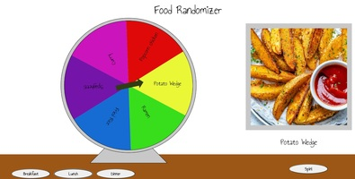

Home
Art
P5js
About Me
P5js
CLICK THE SCREENSHOT OF THE WEBSITE! OR link:Avatar Link
Title: My persona
Medium: P5js
It is a person sitting at a desk half paying attention in class and not knowing what’s going on which accurately dipicts how I am as a person.

CLICK THE SCREENSHOT OF THE WEBSITE! OR link:Meal Randomizer
Title: My Next Meal Randomizer
Medium: P5js
I chose to make a Food Randomizer because I am very indecisive about what I want to eat so I made this food Randomizer.
It consists of food I am able to make or get easily so it doesn’t generate something I can’t do.